动态SQL是MyBatis的强大特性。
| 元素 | 说明 |
| <if> | 判断语句，用于单条件分支判断 |
| <choose>(<when>、<otherwise>) | 相当于Java中的switch…case…default语句，用于多条件分支判断 |
| <where>、<set> | 辅助元素，用于处理一些SQL拼接问题 |
| <foreach> | 循环语句，常用语in语句等列举条件中 |
例：动态SQL元素实例——据学生姓名和性别的组合条件查询
(1)
在IntelliJ IDEA中，创建一个名为mybatis02的maven项目，不选择模板。
将配置模板中的MyBatis-pom.txt
内容copy进pom.xml中。
将项目mybatis01中的src/main/java下的 cn包和src/main/resources下的 db.properties、log4j.properties、 mybatis-config.xml复制到 mybatis02项目中。
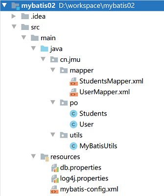
(2)修改映射文件StudentsMapper.xml， 在映射文件中使用<if> 元素编写根据学生姓名和性别的组合条件查询students表的动态SQL。
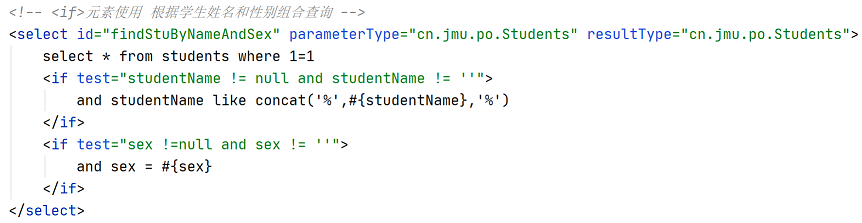
(3)创建测试类StudentsTest，编写测试方法 findStuByNameAndSexTest()。
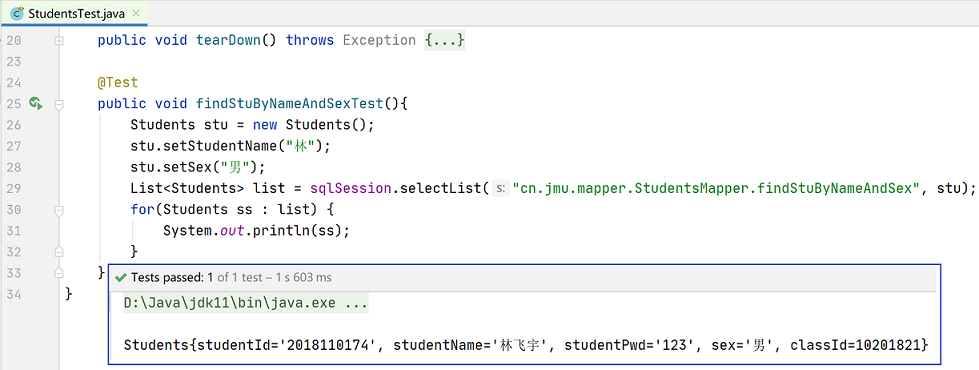
例：动态SQL元素实例：
当学生姓名不为空，则只根据学生姓名进行查询；
当学生姓名为空，而班级号不为空，则只根据班级号进行查询；
当学生姓名和班级号都为空，则要求查询出所有性别不为空的学生。
(1)修改映射文件StudentsMapper.xml，使用 <choose>、<when>、<otherwise>元素。
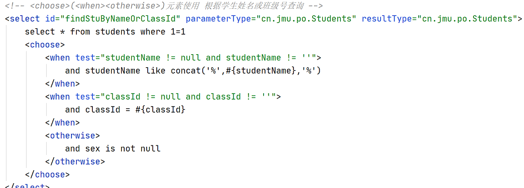
(2)在测试类StudentsTest中，编写测试方法 findStuByNameAndSexTest()。
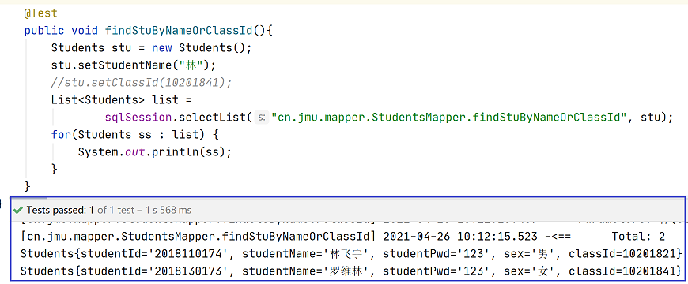
★将封装到对象stu中的studentName代码注释，进行测试。
★将封装到对象stu中的studentName和classId两行代码注释，进行测试。
在第一个案例中，映射文件中编写的SQL后面都加入了“where 1=1”的条件，如果将where后的“1=1”的条件去掉， 那么拼接出来的SQL语句如下：
| select * from students where and studentName like concat('%',?,'%') and sex='男'; |
针对这种情况，MyBatis提供了<where>元素来处理该问题。
☆只有<where>元素内的条件成立时，才会在拼接SQL中加入where关键字，否则不会添加。
☆即使where之后的内容有多余的“AND”或“OR”，<where>元素也会自动将它们去除。
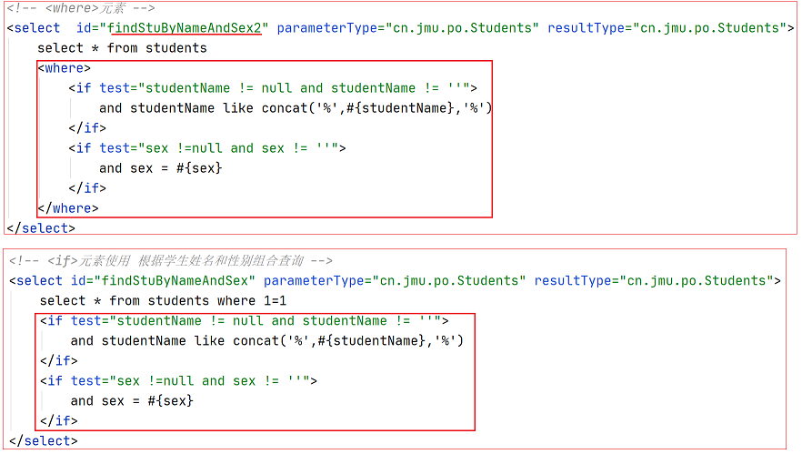
在Hibernate中，如果想要更新某一个对象，就需要发送所有的字段给持久化对象。然而在实际应用中，大多数情况下都只是更新某一个或几个字段。
☆MyBatis中提供了<set>元素实现只更新需要更新的字段， 并且会将SQL语句最后一个多余的逗号去除。
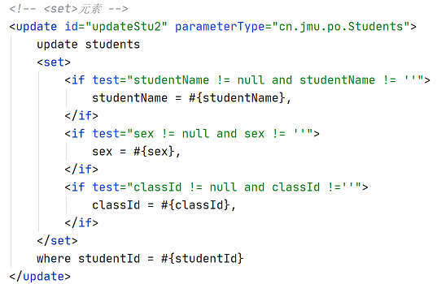
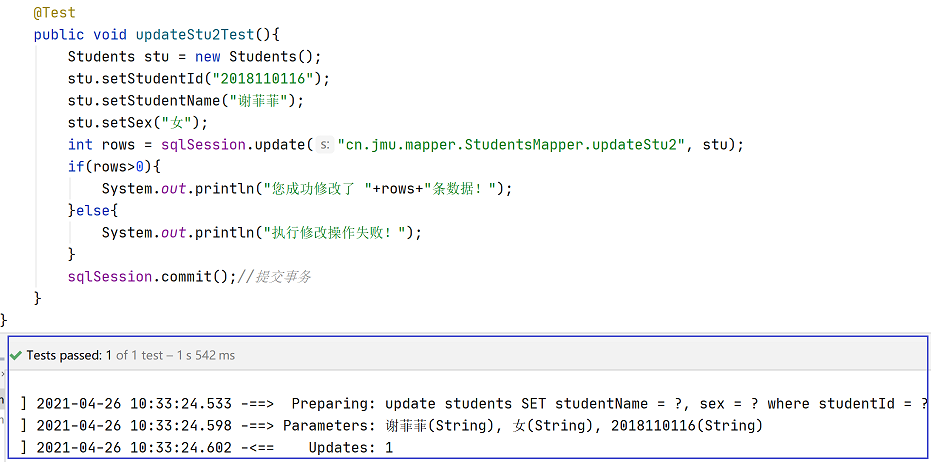
MyBatis提供了用于数组和集合循环遍历的方式。
<foreach>元素中的属性：
☆item:配置循环中当前的元素
☆index:配置当前元素在集合的位置下标
☆collection:配置传递过来的参数类型，可以是array、list(或collection)、Map集合的键
、POJO包装类中的数组或集合类型的属性名
☆open和close:配置以什么符号将这些集合元素包装起来
☆separator:配置各个元素的间隔符
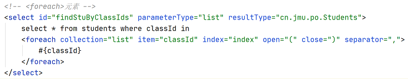 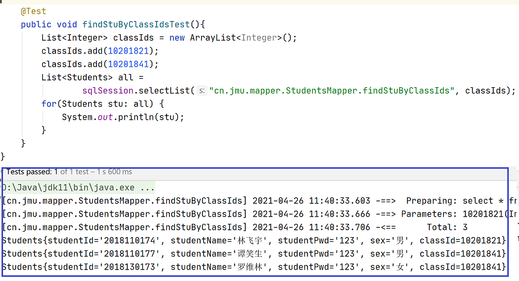
业务背景：商品订单的简化模型
①用户表customer：记录了购买商品的用户信息
②订单表orders：记录了用户所创建的订单（购买商品的订单）
③订单明细表orderdetail：记录了订单的详细信息即购买商品的信息
④商品表items：记录了商品信息
①用户表customer和订单表orders
☆customer --> orders：一个用户可以创建多个订单，一对多
★orders --> customer：一个订单只由一个用户创建，一对一
②orders和orderdetail
★orders --> orderdetail：
一个订单可以购买多个商品，每个商品的购买信息在orderdetail记录，一对多
☆orderdetail --> orders：
一个订单明细只能包括在一个订单中，一对一
③orderdetail和itesm
☆orderdetail --> items：一个订单明细只对应一个商品信息，
一对一
☆items --> orderdetail：一个商品可以包括在多个订单明细 ，
一对多
在数据库mybatis中创建表customer、orders、orderdetail、items
例：关联查询创建订单的用户—— ResultType方法(有兴趣的了解)。
SQL语句：查询的主表（订单表）、查询的关联表（客户表）
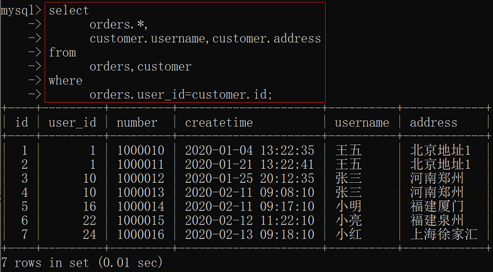
(1)在IntelliJ IDEA中创建Maven项目mybatis03， 不要选择模板， 将mybatis01中的src/main/resources下的 db.properties、log4j.properties、 mybatis-config.xml复制到 mybatis03项目中。
(2)在mybatis03项目下创建包cn.jmu.po ，创建POJO类Customer、Orders。
(3)包cn.jmu.po内原始的Orders.java 不能映射全部字段，需要新创建一个POJO类OrdersCustomer， 重写toString()方法。
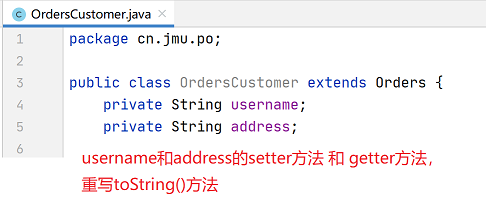
(4)在mybatis03项目下创建包 cn.jmu.mapper， 创建映射文件OrdersMapperCustomer.xml。
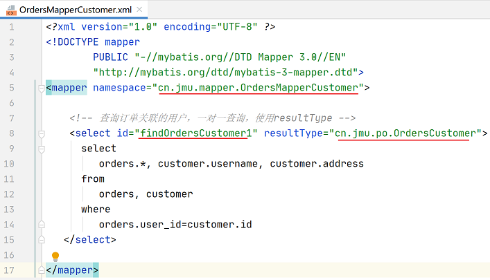
(5)在核心配置文件mybatis-config.xml中， 引入Mapper映射文件。
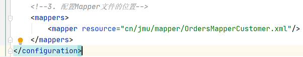
(6)为类cn.jmu.po.OrdersCustomer 创建测试类OrdersCustomerTest， 编写测试方法findOrdersCustomer1Test()。
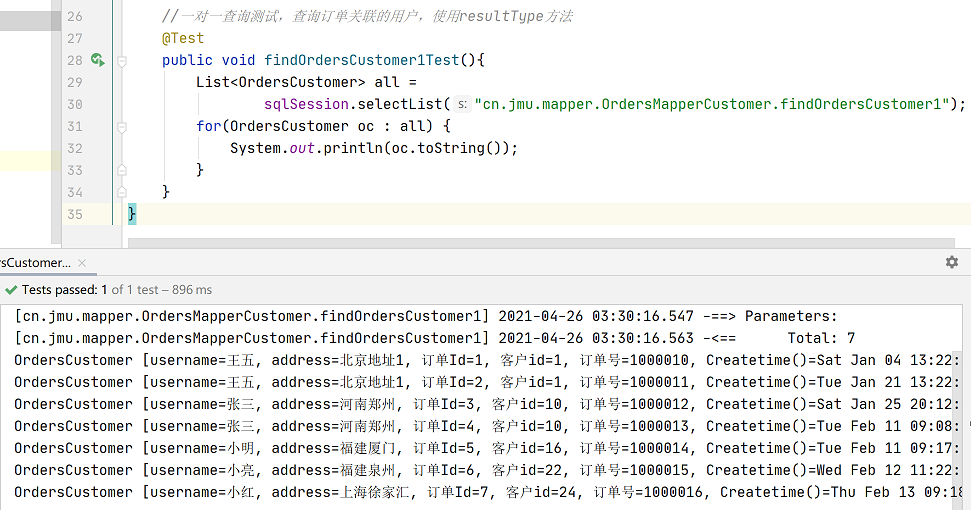
例：一对一映射查询—— ResultMap方法
使用resultMap映射的思路：在Orders类中添加Customer属性，将关联查询出来的用户信息映射到orders对象中的customer属性中。
MyBatis在<resultMap>元素中包含一个<association>子元素来处理一对一的映射关系。
<association>元素属性：
☆Property：指定映射到实体类对象属性，与表字段一一对应；
☆column：指定表中的对应字段；
☆javaType：指定映射到实体对象属性的类型；
☆select：指定引入嵌套查询的子SQL语句，该属性用于关联映射中的嵌套查询；
☆fetchType:是否启用延迟加载，默认为lazy(延迟加载)。
(1)在mybatis03项目下创建包cn.jmu.po2， 在该包下创建Orders类和Customer类 ，其中Orders类中增加customer属性。
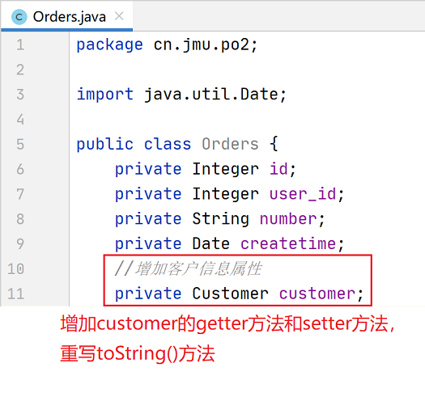
(2)在包cn.jmu.mapper下 修改映射文件OrdersMapperCustomer.xml。
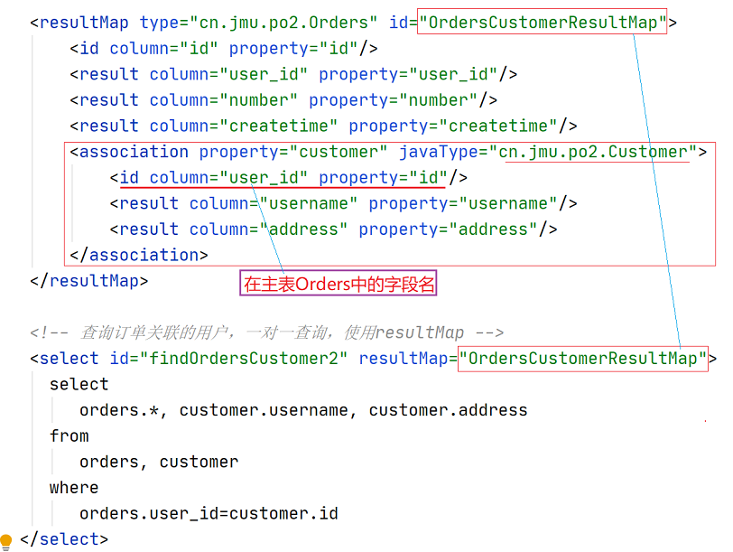
(3)测试类OrdersCustomerTest， 编写测试方法findOrdersCustomer2Test()。
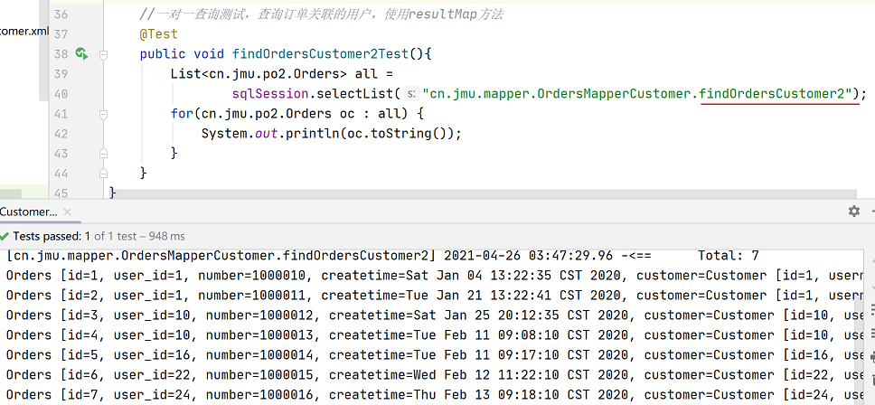
☆resultType：使用resultType实现较为简单， 如果POJO中没有包括查询出来的列名，需要增加列名对应的属性，即可完成映射。 如果没有查询结果的特殊要求建议使用resultType。
☆resultMap： 需要单独定义resultMap，实现有点麻烦，如果对查询结果有特殊的要求，使用resultMap可以完成将关联查询映射POJO的属性中。
☆resultMap可以实现延迟加载，resultType无法实现延迟加载。
例：查询订单及关联的订单明细表
SQL语句：查询的主表（订单表）、查询的关联表（订单明细表）
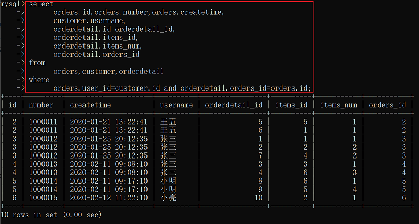
MyBatis在<resultMap>元素中包含一个<collection> 子元素来处理一对多的映射关系。
<collection>元素属性：
☆Property：指定映射到实体类对象属性，与表字段一一对应；
☆column：指定表中的对应字段；
☆ofType：指定映射到实体对象
中集合类型属性所包含的元素类型；
☆select：指定引入嵌套查询的子SQL语句，该属性用于关联映射中的嵌套查询；
☆fetchType:是否启用延迟加载，默认为lazy(延迟加载)。
(1)在mybatis03项目下创建包 cn.jmu.po3，在该包下创建Orders类和 Customer类 和Orderdetail类， 其中Orders类中增加orderdetailList属性。
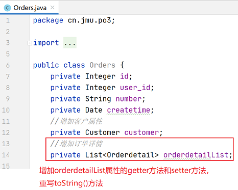
(2)在包cn.jmu.mapper下 修改映射文件OrdersMapperCustomer.xml。
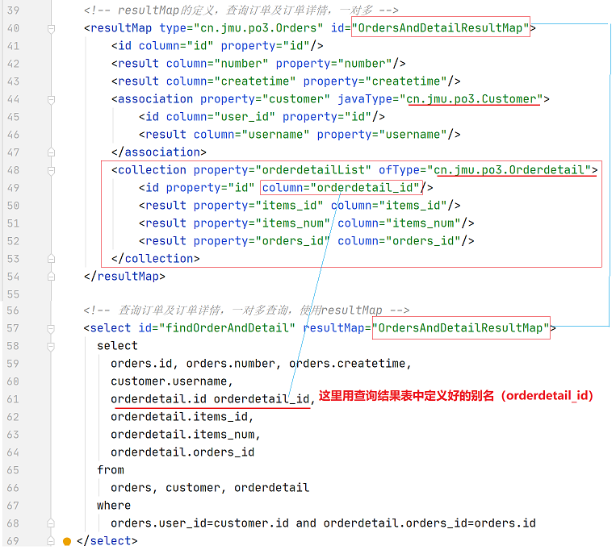
(3)测试类OrdersCustomerTest， 编写测试方法findOrderAndDetailTest()。
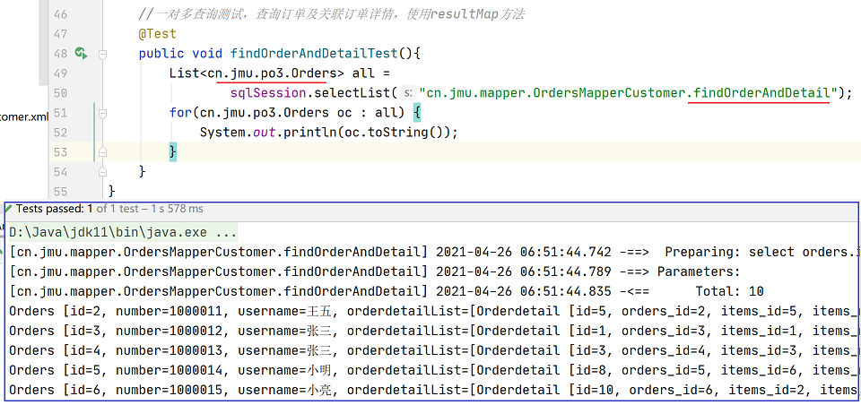
例：查询用户及用户购买商品信息。
SQL语句：查询的主表（用户表）、查询的关联表（订单 、订单明细表）-->商品表
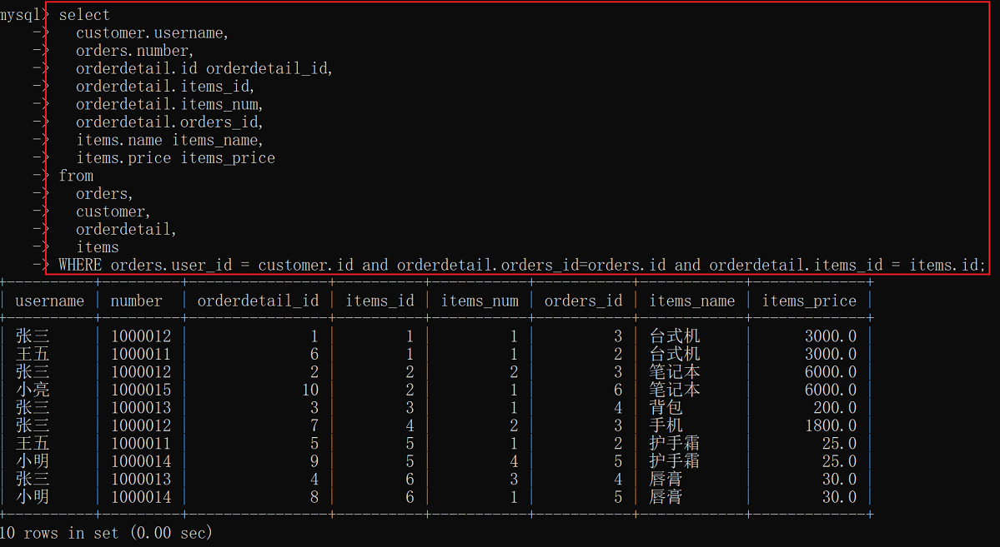
多对多实现思路：
☆将用户信息映射到customer中。
☆在Customer类中添加订单列表属性List<Orders> ordersList，将用户创建的订单映射到ordersList
☆在Orders中添加订单明细列表属性List<OrderDetail> orderdetialList，将订单的明细映射到orderdetialList
☆在orderdetialList中添加Items属性，将订单明细所对应的商品映射到Items
(1)在mybatis03项目下创建包cn.jmu.po4， 在该包下创建Customer类 、Orders类、Orderdetail类、 Items类。
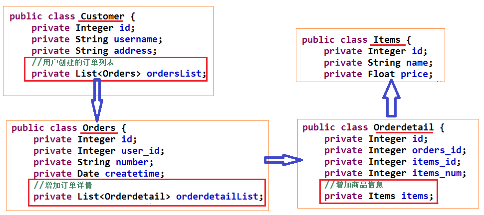
(2)在包cn.jmu.mapper下 修改映射文件OrdersMapperCustomer.xml。
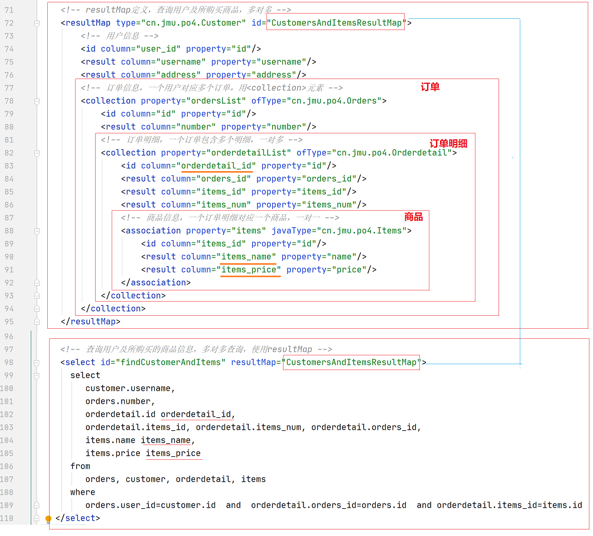
(3)测试类OrdersCustomerTest， 编写测试方法findCustomerAndItemsTest()。
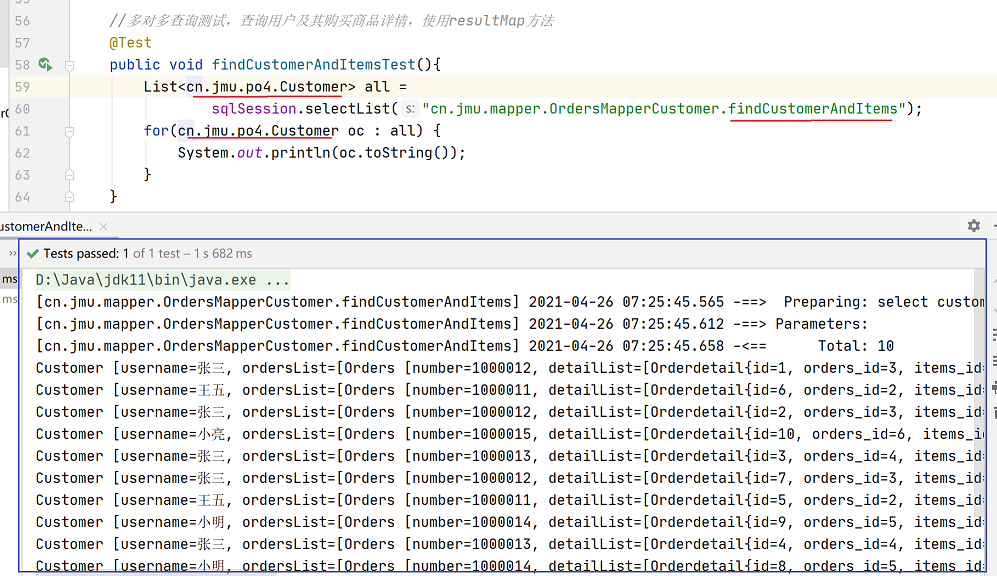